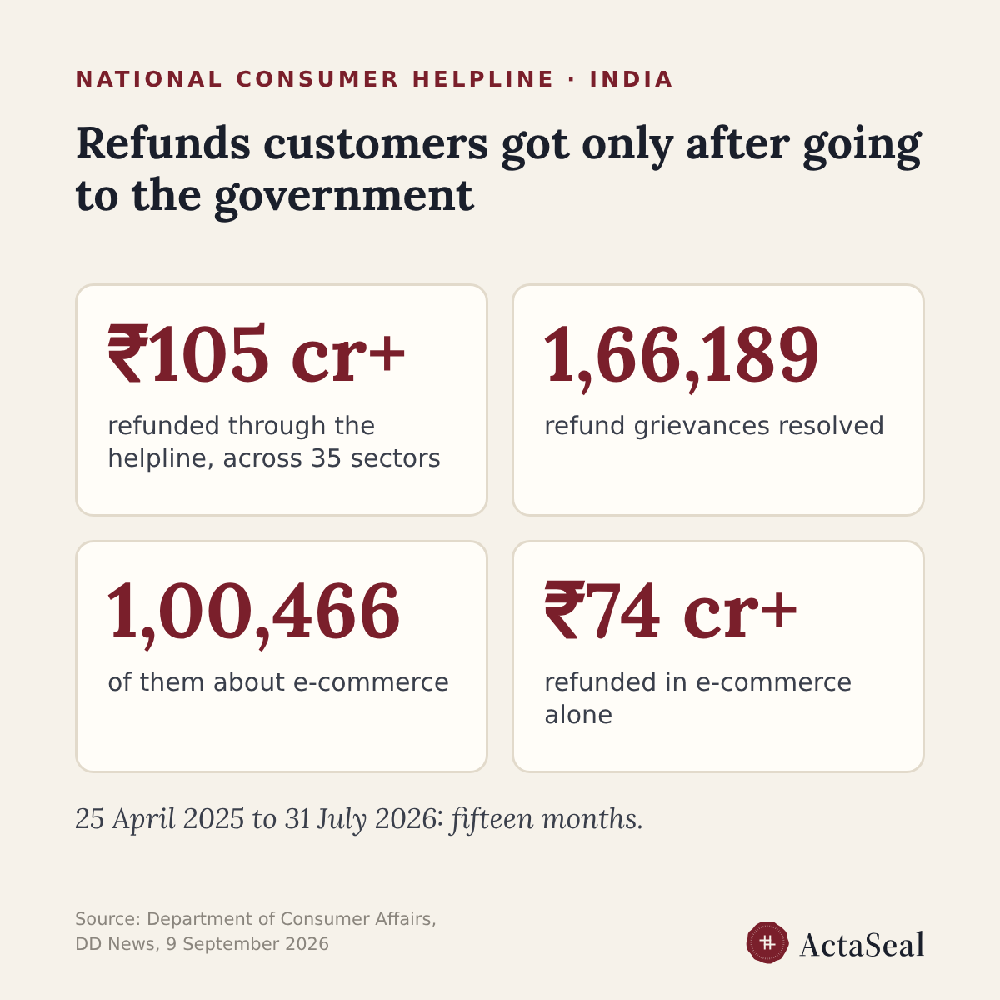

Consumer Protection (E-Commerce) Rules: did every accepted refund get paid?
Rule 4(10) of the Consumer Protection (E-Commerce) Rules, 2020 asks every e-commerce entity to "effect all payments towards accepted refund requests of the consumers" within a reasonable period of time, or the period the RBI or another authority sets. The rule names no fixed number of days.
Refunds are where consumers go when this slips. Between April and December 2025 the National Consumer Helpline handled 67,265 refund complaints across 31 sectors; e-commerce accounted for nearly 40,000 of them and about ₹32 crore of the ₹45 crore refunded through the helpline.
The fifteen months to 31 July 2026 are larger. From 25 April 2025 the helpline resolved 1,66,189 refund grievances across 35 sectors and got more than 105 crore rupees refunded; 1,00,466 of those grievances were about e-commerce, and more than ₹74 crore of the refunds.

The same rules set the clock for the complaint itself. Rule 4(4) asks every e-commerce entity to appoint a grievance officer and show the officer's name, contact details and designation on its platform; rule 4(5) asks it to acknowledge a complaint within forty-eight hours and redress it within one month.
For a brand whose team or AI agent accepts refunds, the question is concrete: for every refund you accepted, can you show that it was paid, and how long it took?
This is a reading of the rules and of public reporting, not legal advice.
Sources: Consumer Protection (E-Commerce) Rules, 2020, rule 4(10), as summarised by TaxClue, https://www.taxclue.in/blog/rule-4-8-11-consumer-protection-e-commerce-rules-2020-cancellation-charges-consent-refunds-and-price-manipulation ; Storyboard18 on the National Consumer Helpline, https://www.storyboard18.com/how-it-works/consumer-affairs-dept-facilitates-rs-45-cr-refunds-in-8-months-as-e-commerce-tops-complaints-86672.htm ; Department of Consumer Affairs on the National Consumer Helpline, DD News, 9 September 2026, https://ddnews.gov.in/en/national-consumer-helpline-facilitates-over-rs-105-crore-in-refunds-to-consumers/ ; Consumer Protection (E-Commerce) Rules, 2020, rules 4(4) and 4(5), notified text, https://taxguru.in/wp-content/uploads/2020/07/Consumer-Protection-E-Commerce-Rules-2020.pdf
Ask an AI about this page: ChatGPT · Claude · Perplexity